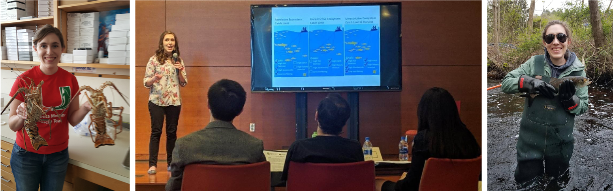
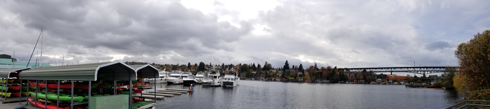

About
I have a Bachelor's of Science degree in Marine Science and Biology from the University of Miami. As an undergraduate student I conducted student research projects to estimate red snapper natural mortality, explore possible ageing procedures for Caribbean spiny lobsters, and assess recruitment correlations with environmental variables.
I am currently a PhD candidate in the Fay Lab at the University of Massachusetts Dartmouth's School of Marine Science and Technology (SMAST). I joined the Fay Lab in the fall of 2016 as a Master's student working to test Ecosystem-Based Fisheries Management alternatives in New England. I transitioned into the PhD program in the fall of 2018, and I have expanded my research to incorporate multiple Management Strategy Evaluation (MSE) projects. In the fall of 2018, I also had the opportunity to travel to Seattle where I spent the fall quarter studying computational modeling and natural resource economics at the University of Washington.

During my time at UMass Dartmouth I have served as a graduate student representative for SMAST's graduate student association. I also represented SMAST on the university's Graduate Student Senate during the 2019-2020 academic year. In this role I managed the senate website and served as chair for the COVID-19 Relif Funding Committee. In my free time I also play saxophone in the university jazz ensemble.